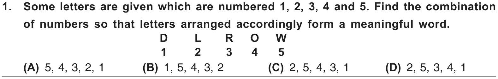
Some letters are given which are numbered 1, 2, 3, 4 and 5. Find the combination of numbers so that letters arranged accordingly form a meaningful word.
D L R O W
1 2 3 4 5
5, 4, 3, 2, 1
1, 5, 4, 3, 2
2, 5, 4, 3, 1
2, 5, 3, 4, 1
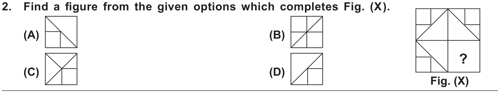
Find a figure from the given options which completes Fig. (X).
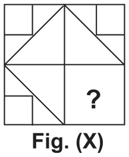
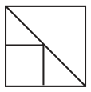
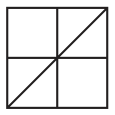
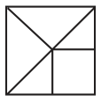
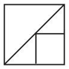
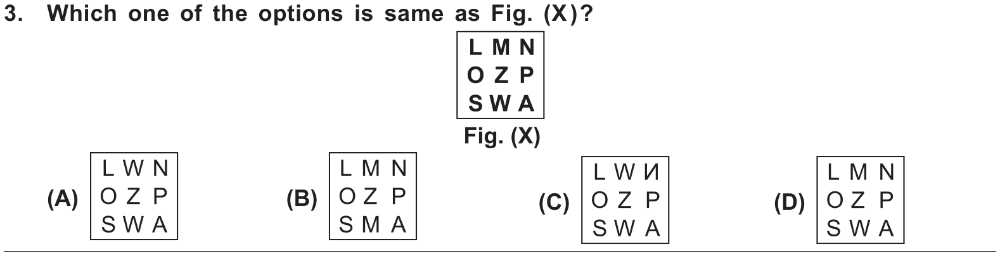
Which one of the options is same as Fig. (X)?
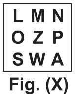
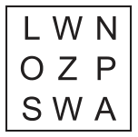
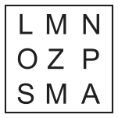
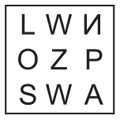
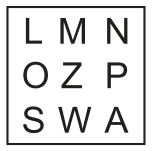
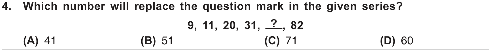
Which number will replace the question mark in the given series?
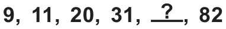
41
51
71
60
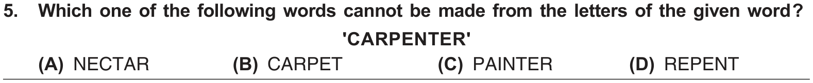
Which one of the following words cannot be made from the letters of the given word?
'CARPENTER'
NECTAR
CARPET
PAINTER
REPENT
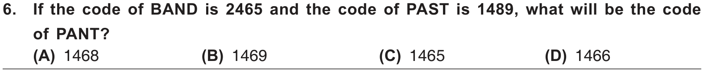
If the code of BAND is 2465 and the code of PAST is 1489, what will be the code of PANT?
1468
1469
1465
1466
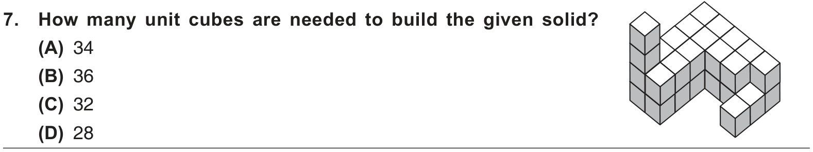
How many unit cubes are needed to build the given solid?
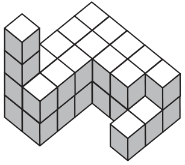
34
36
32
28
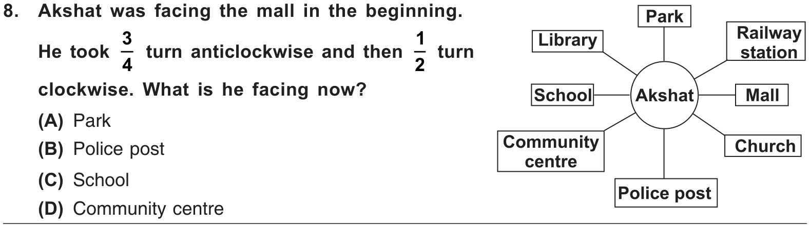
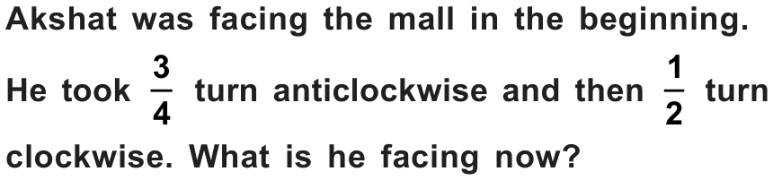
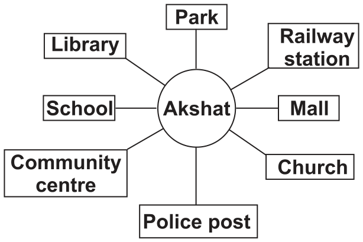
Park
Police post
School
Community centre
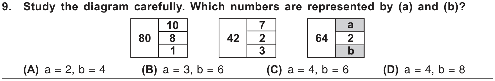
Study the diagram carefully. Which numbers are represented by (a) and (b)?
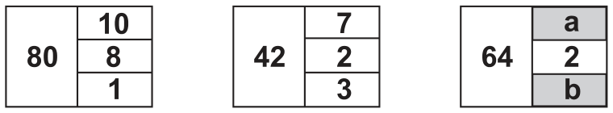
a = 2, b = 4
a = 3, b = 6
a = 4, b = 6
a = 4, b = 8
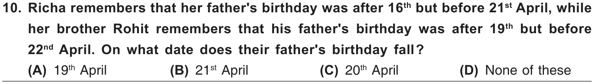
Richa remembers that her father's birthday was after 16th but before 21st April, while her brother Rohit remembers that his father's birthday was after 19th but before 22nd April. On what date does their father's birthday fall?
19th April
21st April
20th April
None of these
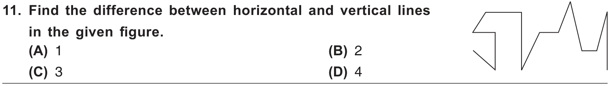
Find the difference between horizontal and vertical lines in the given figure.
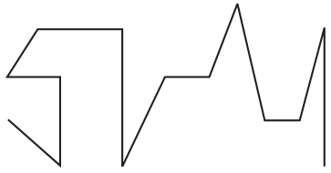
1
2
3
4
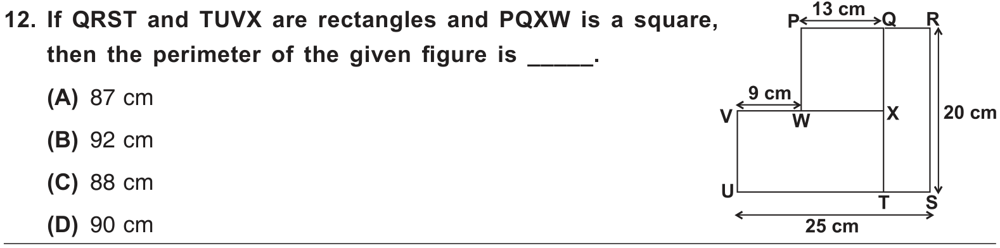
If QRST and TUVX are rectangles and PQXW is a square, then the perimeter of the given figure is _____.
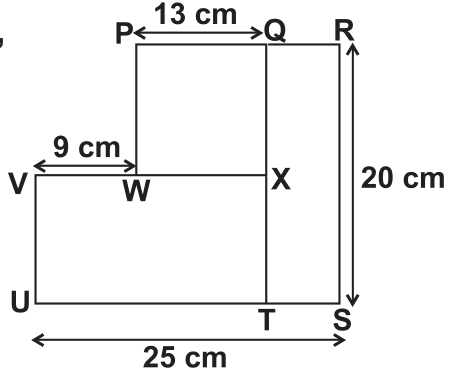
87 cm
92 cm
88 cm
90 cm
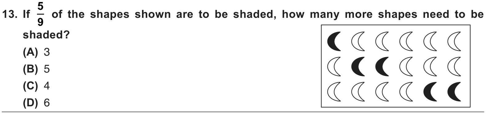
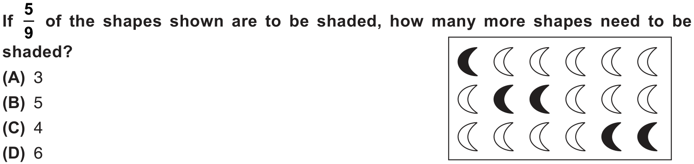
3
5
4
6
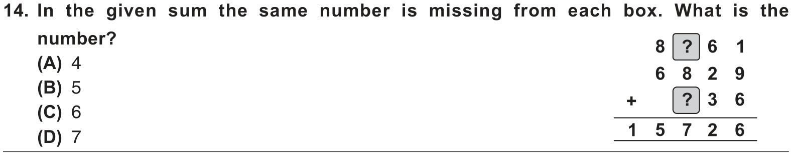
In the given sum the same number is missing from each box. What is the number?
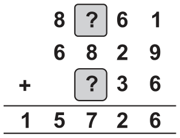
4
5
6
7
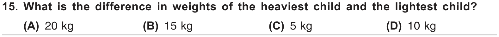
What is the difference in weights of the heaviest child and the lightest child?
20 kg
15 kg
5 kg
10 kg
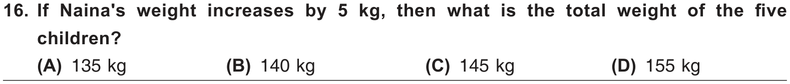
If Naina's weight increases by 5 kg, then what is the total weight of the five children?
135 kg
140 kg
145 kg
155 kg
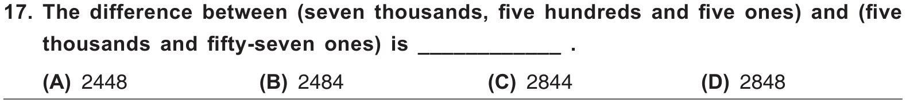
The difference between (seven thousands, five hundreds and five ones) and (five thousands and fifty-seven ones) is ____________ .
2448
2484
2844
2848
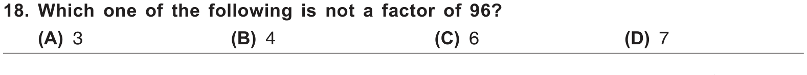
Which one of the following is not a factor of 96?
3
4
6
7
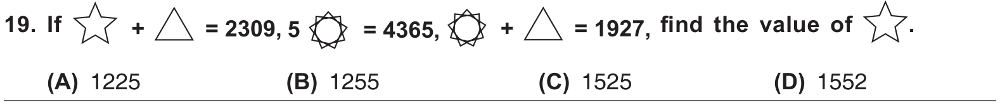
If
1225
1255
1525
1552
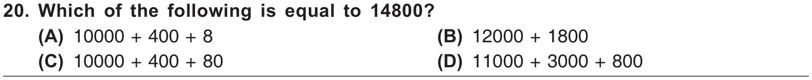
Which of the following is equal to 14800?
10000 + 400 + 8
12000 + 1800
10000 + 400 + 80
11000 + 3000 + 800
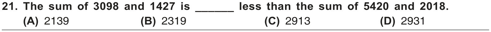
The sum of 3098 and 1427 is ______ less than the sum of 5420 and 2018.
2139
2319
2913
2931
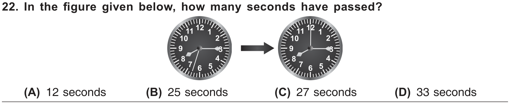
In the figure given below, how many seconds have passed?
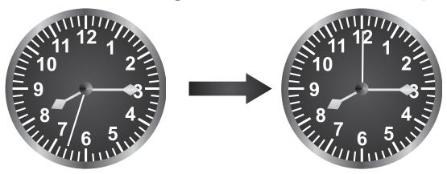
12 seconds
25 seconds
27 seconds
33 seconds
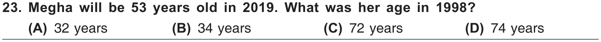
Megha will be 53 years old in 2019. What was her age in 1998?
32 years
34 years
72 years
74 years
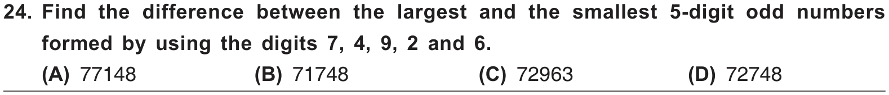
Find the difference between the largest and the smallest 5-digit odd numbers formed by using the digits 7, 4, 9, 2 and 6.
77148
71748
72963
72748
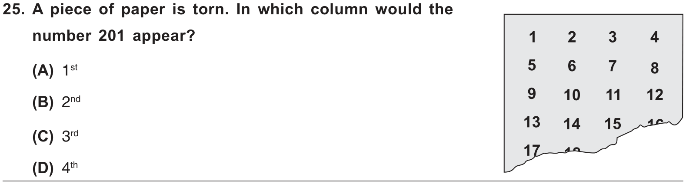
A piece of paper is torn. In which column would the number 201 appear?
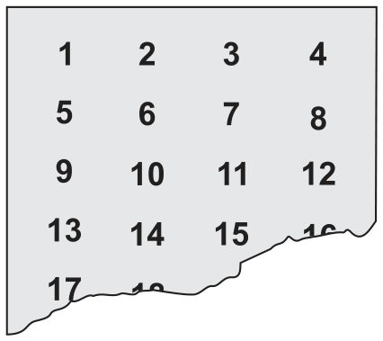
1st
2nd
3rd
4th
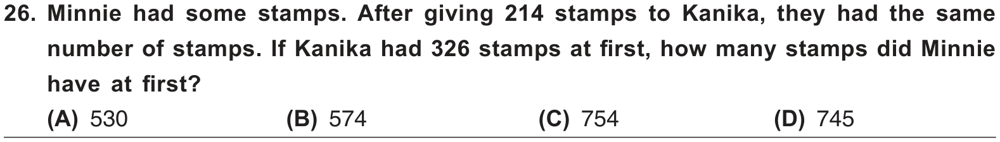
Minnie had some stamps. After giving 214 stamps to Kanika, they had the same number of stamps. If Kanika had 326 stamps at first, how many stamps did Minnie have at first?
530
574
754
745
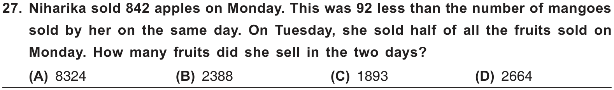
Niharika sold 842 apples on Monday. This was 92 less than the number of mangoes sold by her on the same day. On Tuesday, she sold half of all the fruits sold on Monday. How many fruits did she sell in the two days?
8324
2388
1893
2664
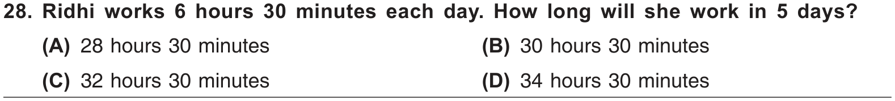
Ridhi works 6 hours 30 minutes each day. How long will she work in 5 days?
28 hours 30 minutes
30 hours 30 minutes
32 hours 30 minutes
34 hours 30 minutes
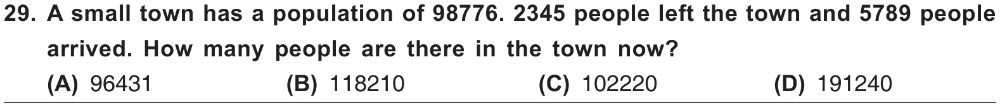
A small town has a population of 98776. 2345 people left the town and 5789 people arrived. How many people are there in the town now?
96431
118210
102220
191240
Anusha bought 1090 stickers. She gave 10 stickers to her friend and gave the rest equally to students who obtained distinction in a Mathematics test. If each student received 9 stickers, how many students obtained distinction in the test?
120
180
60
210
If a factory produces 869 toys each day, how many toys does it produce in 3 weeks?
6083
18249
2607
18429
Anjali bought one dress, one shirt and one T-shirt. The T-shirt costs ₹ 150. The shirt costs ₹ 250 more than the T-shirt. The dress costs twice as much as the T-shirt. How much did she spend on the three items?
₹ 950
₹ 1050
₹ 750
₹ 850
There were a number of children in a hall. The teacher could divide the children equally without any leftovers in groups of either 5 or 9. Which of the following could be the number of children in the hall ?
135
243
125
215
There are 345 red balloons and 335 yellow balloons. Amit mixes them together and divides them into groups of 8. How many groups of balloons are there?
55
77
85
75